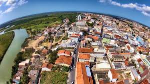

A história de São Mateus, no Espírito Santo, começa em 1544, com a fundação do Povoado do Cricaré pelos portugueses, que o rebatizaram de São Mateus em 1566. A cidade, que se desenvolveu a partir do porto, foi berço de escravidão e preserva a cultura de comunidades quilombolas, além de tradições como Jongo e Capoeira. O município é um dos mais antigos do estado e do Brasil, sendo importante na colonização capixaba e na atualidade, com economia voltada ao turismo, agricultura e pecuária.
Caso queira mais informações, baixe nossos textos informativos.
Como referênciar um link